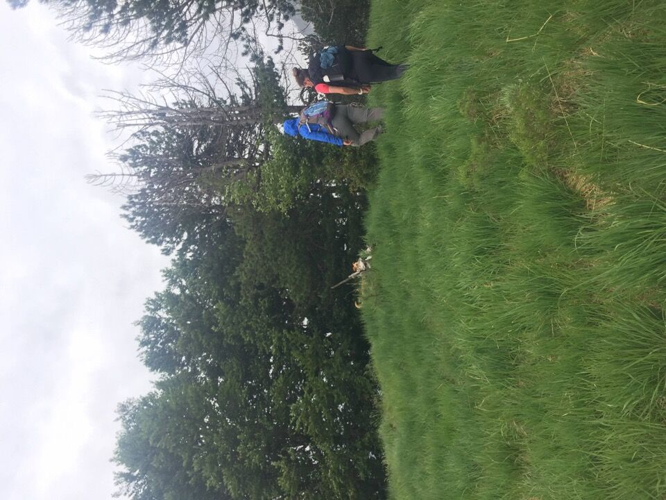
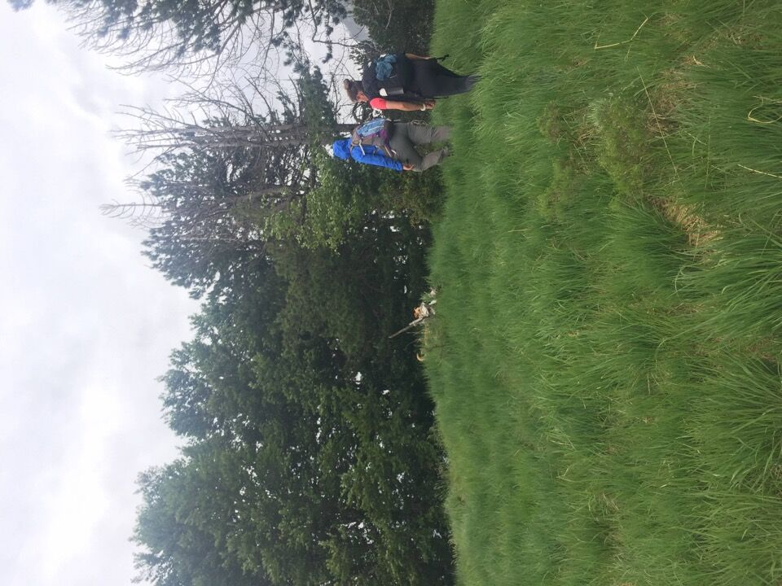

Mi aveva incuriosito la lettura di una relazione del troi da le Seate, sentierino che s'inoltra nella forra del rio Simòn, così ho deciso di andare a vedere. Semplice gita con Lisa, Simone e il cane.
Saliamo a Ràuni e alle tre croci, dove possiamo osservare il versante Ovest del nostro monte.
I monti di Chiusaforte appaiono boscosi, di quota modesta e quindi anonimi e insignificanti per l'escursionista, se visti da lontano. In realtà quando ci si entra dentro ci si ritrova in un mondo quantomai inaspettato di boschi, cenge, torrenti, forre e pareti.
In foto il valloncello del torrente che fornisce l'acqua allo stâli di Belepéit Padovàn: riu da le Fontane; il sentiero del versante Ovest passa lì in mezzo, ma ben più in alto.

Imbocchiamo il troi da le Seate, bel sentiero in cengia alto sul rio Simòn, dove il cane fa il pazzo e rischia di schiantarsi qualche centinaio di metri più in basso!

Passiamo per i clapusç di Burnize.

La zona sul greto del rio Simòn è davvero suggestiva.


Seguiamo poi il troi che sale a Cunturate, già meno frequentato ma ben marcato perché ripido su una costa di pini (detta pecòl, separata dal corpo principale del Belepéit Padovàn dal riu d'Incènis).
Comunque, ho motivo di sospettare l'esistenza di un sentiero di collegamento fra lo stâli dal Laurinç e il pecòl; a tal proposito per osservare la zona andrebbe fatto il giro per Cite e Tamaruç, che permette pure di vedere i resti della stua del rio Simòn. Non serve fare grandi imprese per godere appieno delle bellezze della Montagna.
Cunturate è davvero un luogo che merita di essere visitato.
Verso la dorsale Làvara - Plauris.

Un salto in cima e poi scendiamo al bellissimo stâli di Belepéit Padovàn.
 


Il versante Est del Pisimoni, con forcje Diame (inizio orientale del cengione Sud) e lo stavolo Brèisi.
Scendiamo per il Cuel Scjefin (rudere dello stâli da le Russe, q932), Pulize di Là e il Cuel da le Melaris (stâli di Sterpéit).
Finita la gita ci rinfreschiamo le membra (eufemismo per dire ci togliamo le zecche) sul rio Simòn.
La parete in centro foto sovrasta il riu di Cueste Spiçade; il dosso lì sotto è la porta d'accesso per l'interessante versante Ovest del Belepéit Padovàn.

Non c'entra un accidente, ma pranziamo a Resiutta e faccio qualche foto al gruppo di cimette a Nord del Plauris, al tempo a me ancora ignoto.
Parlo a posteriori: in foto lo Spic col crestone Nord-Ovest (che prima o poi...), a dx la q1320 dirimpettaia a Vetta Criuze, e poi i torrioni - di cui conosco la via di salita - che precedono il M. Àrghine; tutto a sx il ripido ghiaione via d'accesso (assai pericolosa) alla Punta Linclìn.
Affascinante come sempre il Pisimoni: probabilmente uno dei monti più interessanti della regione.
A sx il rio di Place e il Cuel di Sôre.